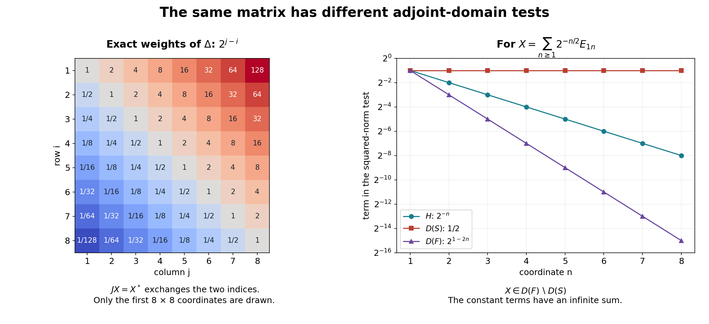

Closing an involution and recovering its modular data
Self-checked by the writing AI.
An algebraic involution need not be continuous for a Hilbert norm. Its graph is the first object to understand. For a cyclic separating vector, the commutant supplies enough test vectors to close that graph. Once it is closed, a positive form determines the modulus, and the identity that the involution is its own inverse determines the polar symmetry.
This unit proves those statements without a modular commutant theorem. Its graph and polar results apply to every closed densely defined conjugate-linear involution, so they can also be used later for Hilbert algebras. It does not prove closability for the involution associated with an arbitrary faithful normal semifinite weight.
Free comparisons for this construction are Fumio Hiai's lecture notes and Brent Nelson's notes on Tomita–Takesaki theory. Their exact passages and the points requiring correction appear at the end. The arguments below prove the adjoint, closed-form and polar steps explicitly, with complete preceding programme proofs for their Hilbert and spectral inputs.
Conventions and dependency contracts
Inner products are linear in the first variable. Hilbert spaces need not be separable. A concrete von Neumann algebra \(M\subseteq B(H)\) contains \(I_H\), and
\[ M'=\{b\in B(H):ba=ab\text{ for every }a\in M\}. \]The zero Hilbert space is allowed. No vector is normalized unless stated.
An operator includes its domain; \(\operatorname{ran}A\) means its actual range. The product \(BA\) has domain
\[ D(BA)=\{x\in D(A):Ax\in D(B)\}. \]Every unbounded operator identity includes equality of domains. Conjugate-linear adjoints are defined in OA-MOD-TC-03.
The exact prerequisites have complete preceding programme proofs:
- TC-DEP-HILBERT: The bounded prerequisite boundary proves inner-product completion, continuous extension from a dense subspace, projection, the complex Riesz theorem, bounded adjoints and the range-kernel identity. Its real Hilbert foundation proves projection and real Riesz representation before the complex conversion. In TC-03 the scalar pairing is conjugate-linear: conjugate the functional, apply linear Riesz, and conjugate the equality back. Every unbounded adjoint fact needed here is proved in TC-03.
- TC-DEP-VN: Finite-vector approximation and the bicommutant proves the bicommutant theorem by finite-vector approximation on arbitrary Hilbert spaces, including the zero space.
- TC-DEP-FORMS: Representation with the exact square-root domain proves representation and uniqueness for a densely defined closed nonnegative form, with its intrinsic operator domain and exact square-root domain. This uses the bounded inclusion of the complete form space and the preceding spectral construction. It assumes neither unbounded polar decomposition nor self-adjointness of a closed-operator adjoint product.
- TC-DEP-SPECTRAL: Bounded Borel functions and the spectral measure–Recovering a self-adjoint operator from a unitary construct the spectral measure and closed unbounded integrals with their squared-integrability domains, adjoints, kernels and multiplication domains. Changes of variable, powers, and actual ranges proves square-root uniqueness, the inverse of a positive injective self-adjoint operator on its actual range, and powers. Transport, reduction, and membership in an algebra proves unitary and antiunitary transport; Convergence and cutoffs proves convergence for spectral cutoffs. The scalar exponential and logarithm used for powers are constructed in Logarithms and imaginary powers. Scalar integration, Section 2 proves dominated convergence. TC-10 applies it to sequences against each finite vector measure; no dominated-convergence assertion for unrestricted nets is used.
The sequence and probability models use SS1, which proves \(L^2\) completeness for every measure space. For a set \(I\) with counting measure, write \(\sum_{i\in I}|x_i|^2\) for the supremum of its finite partial sums. If this number is finite, for every \(\varepsilon>0\) a finite partial sum is within \(\varepsilon^2\) of the supremum. Removing those coordinates leaves square norm at most \(\varepsilon^2\). This proves finite-support density for arbitrary \(I\); it imposes no separability assumption on \(H\).
For the Hilbert–Schmidt model, a square-summable matrix \(X=(X_{ij})\) acts on finite-support vectors by \((Xv)_i=\sum_jX_{ij}v_j\). Cauchy–Schwarz gives
\[ \|Xv\|^2\le\left(\sum_{i,j}|X_{ij}|^2\right)\|v\|^2. \]Thus it extends to a bounded operator, with columns \(Xe_j\), and \(\sum_j\|Xe_j\|^2=\sum_{i,j}|X_{ij}|^2\). The complete coordinate Hilbert space is exactly the Hilbert–Schmidt space in this basis. Left multiplication is bounded because
\[ \sum_j\|aXe_j\|^2\le\|a\|^2\sum_j\|Xe_j\|^2. \]The matrix-column argument in TC-11 proves the needed commutant assertion directly. Tensor notation there only denotes these square-summable columns; no tensor-product theorem is an input.
The geometric series in the models can be checked from the finite identity \(\sum_{n=1}^N r^n=r(1-r^N)/(1-r)\), \(0<r<1\). If \(r=(1+\delta)^{-1}\), then \(r^N\le(1+N\delta)^{-1}\to0\), using the finite binomial inequality. A series whose positive terms fail to tend to zero diverges, because convergence would make each difference of consecutive partial sums tend to zero. These observations cover all the displayed convergence and divergence tests.
These preceding proofs and the arguments below provide the mathematical inputs. No general-weight closability, modular commutant theorem or weight/Hilbert-algebra correspondence is assumed.
Cyclicity and separation exchange through the commutant
A vector \(\Omega\in H\) is cyclic for \(N\subseteq B(H)\) when \(\overline{N\Omega}=H\), and separating for \(N\) when \(a\Omega=0\), \(a\in N\), implies \(a=0\).
Proposition. For a unital concrete von Neumann algebra,
\[ \Omega\text{ cyclic for }M \quad\Longleftrightarrow\quad \Omega\text{ separating for }M', \tag{TC.1} \] \[ \Omega\text{ separating for }M \quad\Longleftrightarrow\quad \Omega\text{ cyclic for }M'. \tag{TC.2} \]Proof. If \(M\Omega\) is dense and \(b\in M'\) satisfies \(b\Omega=0\), then \(b(a\Omega)=a(b\Omega)=0\) for every \(a\in M\). Boundedness and density give \(b=0\).
Conversely, let \(p\) project onto \(\overline{M\Omega}\). This subspace is invariant under every \(a\in M\) and \(a^*\). Its orthogonal complement is invariant too, because \(\langle a\eta,\xi\rangle=\langle\eta,a^*\xi\rangle=0\) when \(\eta\) is in that complement and \(\xi\in\overline{M\Omega}\). Therefore \(p\) commutes with \(M\), so \(p\in M'\). Unitality gives \(p\Omega=\Omega\). If \(\Omega\) separates \(M'\), then \((I-p)\Omega=0\) forces \(p=I\). This proves (TC.1). Apply it to \(M'\), using \(M''=M\), to obtain (TC.2). \(\square\)
Only the second equivalence uses the bicommutant identification. No countable dense family was selected. Existence of a cyclic separating vector is a hypothesis of this model, not a claim about every representation or every von Neumann algebra.
The adjoint of a conjugate-linear operator
Let \(A:D(A)\subseteq H\to K\) be conjugate-linear with dense complex-linear domain. Define
\[ \begin{aligned} D(A^*)=\{y\in K:\ &\text{there is }z\in H\text{ such that}\\ &\langle Ax,y\rangle=\langle z,x\rangle \text{ for every }x\in D(A)\}. \end{aligned} \tag{TC.3} \]Density makes \(z\) unique, and we set \(A^*y=z\). Thus the convention is
\[ \boxed{\ \langle Ax,y\rangle=\langle A^*y,x\rangle\ }. \tag{TC.4} \]The Riesz theorem gives the equivalent test
\[ y\in D(A^*)\quad\Longleftrightarrow\quad \sup_{\substack{x\in D(A)\\\|x\|\leq1}} |\langle Ax,y\rangle|<\infty. \tag{TC.5} \]The domain is a complex vector space and \(A^*\) is conjugate-linear. Indeed, replacing \(y\) by \(\lambda y\) multiplies the left side of (TC.4) by \(\overline\lambda\), so \(A^*(\lambda y)=\overline\lambda A^*y\).
The conjugate Hilbert space \(\overline K\) consists of symbols \(\overline y\), with
\[ \lambda\overline y=\overline{\overline\lambda y}, \qquad \langle\overline u,\overline v\rangle_{\overline K} =\langle v,u\rangle_K. \]The map \(C_K:y\mapsto\overline y\) is conjugate-linear and isometric. Thus \(\widehat A=C_KA:D(A)\to\overline K\) is complex-linear, and its ordinary linear adjoint satisfies
\[ \widehat A^*(\overline y)=A^*y. \tag{TC.6} \]Conjugating (TC.4) proves this identity.
Graph lemma. A densely defined conjugate-linear \(A\) is closable if and only if \(D(A^*)\) is dense. Its adjoint is always closed. When \(A\) is closable,
\[ (\overline A)^*=A^*,\qquad A^{**}=\overline A. \tag{TC.7} \]Proof. For a densely defined linear operator \(T:D(T)\subseteq H\to L\), direct use of its adjoint definition gives
\[ G(T)^\perp=\{(-T^*y,y):y\in D(T^*)\}. \tag{TC.8} \]Indeed, orthogonality of \((u,y)\) to every \((x,Tx)\) says \(\langle x,u\rangle+\langle Tx,y\rangle=0\); this is exactly \(y\in D(T^*)\), \(u=-T^*y\).
A vector \((0,z)\) belongs to \(\overline{G(T)}=G(T)^{\perp\perp}\) precisely when \(z\perp D(T^*)\). The closure of a linear graph is an operator graph precisely when it contains no nonzero vertical vector: two points with the same first coordinate have a vertical difference, and this is the only possible failure of uniqueness. Thus \(T\) is closable exactly when \(D(T^*)\) is dense. Apply this to \(\widehat A\), using (TC.6).
If \(y_n\to y\) and \(A^*y_n\to z\), taking limits in (TC.4) for each fixed \(x\in D(A)\) gives \(\langle Ax,y\rangle=\langle z,x\rangle\). Hence \(y\in D(A^*)\), \(A^*y=z\); this proves closedness.
For closable \(A\), the adjoint pairing extends by limits along the graph, so \(A^*=(\overline A)^*\). To verify the double-adjoint statement, (TC.8) for \(\widehat A\) becomes
\[ G(\widehat A)^\perp =\{(-A^*y,\overline y):y\in D(A^*)\}. \]The vector \((x,\overline z)\) is orthogonal to this space if and only if
\[ -\langle x,A^*y\rangle+\langle y,z\rangle=0 \quad(y\in D(A^*)). \]Conjugating says \(\langle A^*y,x\rangle=\langle z,y\rangle\), precisely \(x\in D(A^{**})\), \(A^{**}x=z\). The orthogonal double complement is the graph closure. Therefore \(A^{**}=\overline A\). \(\square\)
Normed spaces are metrizable, so the use of sequences in graph closedness does not impose separability.
The commutant supplies a dense adjoint test domain
Suppose \(\Omega\) is cyclic and separating for \(M\), hence also for \(M'\). Define
\[ S_0:M\Omega\to H,\quad S_0(a\Omega)=a^*\Omega, \qquad F_0:M'\Omega\to H,\quad F_0(b\Omega)=b^*\Omega. \tag{TC.9} \]Separation makes the maps well-defined; cyclicity makes their domains dense. They are conjugate-linear, preserve their domains, and square to the identity there.
Proposition. Both maps are closable, and
\[ F_0\subseteq S_0^*,\qquad S_0\subseteq F_0^*. \tag{TC.10} \]Proof. For \(a\in M\), \(b\in M'\),
\[ \begin{aligned} \langle S_0(a\Omega),b\Omega\rangle &=\langle a^*\Omega,b\Omega\rangle\\ &=\langle\Omega,ab\Omega\rangle\\ &=\langle\Omega,ba\Omega\rangle\\ &=\langle b^*\Omega,a\Omega\rangle. \end{aligned} \tag{TC.11} \]This places \(b\Omega\) in \(D(S_0^*)\) with image \(b^*\Omega\). Interchanging the two algebras proves the other inclusion. Both adjoints have dense domain, so OA-MOD-TC-03 proves closability.
Directly, if \(a_n\Omega\to0\) and \(a_n^*\Omega\to\eta\), (TC.11) gives \(\langle\eta,b\Omega\rangle=\lim_n\langle b^*\Omega,a_n\Omega\rangle=0\) for every \(b\in M'\). Density forces \(\eta=0\), excluding a nonzero vertical limit in the graph. \(\square\)
Set
\[ S=\overline{S_0},\qquad T=\overline{F_0},\qquad F=S^*. \tag{TC.12} \]The distinct letters \(T,F\) record a proof boundary. We have proved
\[ T\subseteq F=S_0^*,\qquad S\subseteq T^*. \tag{TC.13} \]Thus \(M'\Omega\) is Hilbert-norm dense in \(H\) and lies in \(D(F)\). We have not proved it is a graph core for \(F\). Equality \(T=F\) is a further modular-theoretic conclusion and is not used below.
Closing a graph preserves the involution
Let \(V\subseteq H\) be dense, and let \(s:V\to V\) be a closable conjugate-linear map with \(s^2=I_V\). Write \(S=\overline s\).
Theorem. The operator \(S\) is a closed densely defined conjugate-linear involution:
\[ S(D(S))=D(S),\qquad S^2x=x\quad(x\in D(S)). \tag{TC.14} \]Equivalently, \(S^{-1}=S\) with the inverse defined on its actual range. In particular \(S\) is injective with dense range.
Its domain is a Hilbert space for
\[ \langle x,y\rangle_S =\langle x,y\rangle+\langle Sy,Sx\rangle,\qquad \|x\|_S^2=\|x\|^2+\|Sx\|^2. \tag{TC.15} \]The space \(V\) is dense in this norm. Moreover,
\[ x\in D(S)\quad\Longleftrightarrow\quad \begin{array}{l} \text{some }x_n\in V\text{ satisfies }x_n\to x\\ \text{and }(s x_n)\text{ is Cauchy in }H. \end{array} \tag{TC.16} \]For every such sequence, \(Sx=\lim_n sx_n\).
Proof. If \(x\in D(S)\), graph closure supplies \(x_n\in V\) with \(x_n\to x\), \(sx_n\to Sx\). The sequence \(y_n=sx_n\) lies in \(V\), converges to \(Sx\), and satisfies \(sy_n=x_n\to x\). Closedness gives \(Sx\in D(S)\), \(S(Sx)=x\). This proves both the involution and the equality of range and domain.
The second summand of (TC.15) is linear in \(x\): the entries have been reversed to compensate for conjugate-linearity of \(S\). Positivity and definiteness follow immediately. A graph-norm Cauchy sequence has limits for both \(x_n\) and \(Sx_n\); closedness places the limit pair in \(G(S)\). This proves completeness. Graph approximation proves density of \(V\).
If the right side of (TC.16) holds, completeness of \(H\) gives \(y=\lim_n sx_n\), and graph closure gives \(Sx=y\). Conversely, graph approximation supplies such a sequence. \(\square\)
As an operator on the Hilbert space \(D(S)\) with this graph inner product, \(S\) is antiunitary:
\[ \langle Sx,Sy\rangle_S =\langle Sx,Sy\rangle+\langle y,x\rangle =\langle y,x\rangle_S. \tag{TC.17} \]This does not claim boundedness for the original norm of \(H\). The theorem applies separately to \(S_0\) and \(F_0\), so both \(S,T\) in (TC.12) are closed involutions before any identification of \(T\) with \(S^*\).
The vector algebra has the left Hilbert algebra properties
On \(\mathcal A=M\Omega\), put
\[ (a\Omega)(c\Omega)=(ac)\Omega,\qquad (a\Omega)^\sharp=a^*\Omega. \tag{TC.18} \]Separation gives unique representatives, so these are well-defined and inherit associativity and the algebraic involution identities. The unit is \(\Omega\).
For \(\xi=a\Omega\), left multiplication on \(\mathcal A\) is the restriction of the bounded operator \(a\). It obeys \(\|L_\xi\eta\|\leq\|a\|\|\eta\|\). For \(\eta=c\Omega\), \(\zeta=d\Omega\),
\[ \langle\xi\eta,\zeta\rangle =\langle ac\Omega,d\Omega\rangle =\langle c\Omega,a^*d\Omega\rangle =\langle\eta,\xi^\sharp\zeta\rangle. \tag{TC.19} \]The involution is closable by OA-MOD-TC-04. The product span is all of \(\mathcal A\), since \(\eta=\Omega\eta\), and is dense by cyclicity.
These are the four left Hilbert algebra properties: bounded left multiplication, the adjoint compatibility (TC.19), closable involution, and dense products. The bounded left multiplication algebra is exactly the given \(M\), since \(L_{a\Omega}=a\) on a dense subspace. This verifies the vector construction; it makes no assertion about a general weight domain.
A closed involution determines a positive operator
For OA-MOD-TC-07–10, let \(S\) be any closed densely defined conjugate-linear involution on \(H\). There is no algebra or distinguished vector in this hypothesis. Put \(F=S^*\).
Proposition. The operator \(F\) is closed and densely defined. The form
\[ D(q)=D(S),\qquad q(x,y)=\langle Sy,Sx\rangle \tag{TC.20} \]is densely defined, closed, and nonnegative. Its representing operator is
\[ \Delta=FS=S^*S,\qquad D(\Delta)=\{x\in D(S):Sx\in D(F)\}. \tag{TC.21} \]It is positive self-adjoint and injective. For \(A=\Delta^{1/2}\),
\[ D(A)=D(S),\qquad \langle Ax,Ay\rangle=\langle Sy,Sx\rangle. \tag{TC.22} \]Proof. The graph lemma gives closedness of \(F\); since \(S\) is closable, it also gives density of \(D(F)\). The form norm of \(q\) is the complete graph norm (TC.15), so \(q\) is closed.
TC-DEP-FORMS gives a positive self-adjoint \(\Delta\), equation (TC.22), and the intrinsic characterization
\[ \begin{aligned} x\in D(\Delta)\quad\Longleftrightarrow\quad &x\in D(S)\text{ and some }z\in H\text{ satisfies}\\ &\langle Sv,Sx\rangle=\langle z,v\rangle \quad(v\in D(S)). \end{aligned} \]The last condition says exactly \(Sx\in D(F)\), \(FSx=z\), by the definition of the conjugate-linear adjoint. This proves (TC.21), including the domain.
If \(Ax=0\), (TC.22) gives \(Sx=0\), hence \(x=0\) because \(S\) is an involution. Thus \(A\) and \(\Delta=A^2\) are injective. Their ranges are dense by the spectral calculus. \(\square\)
In particular,
\[ \|x\|_S^2=\|x\|^2+\|\Delta^{1/2}x\|^2. \tag{TC.23} \]A graph core for \(S\) is therefore a form core for \(\Delta\). This does not assert that it lies in \(D(\Delta)\), or is an operator core for \(\Delta\).
Polar decomposition from the form, with inverse domains
An antiunitary \(J:H\to H\) is a surjective conjugate-linear isometry. Equivalently, \(J\) is surjective and \(\langle Jx,Jy\rangle=\langle y,x\rangle\) for all \(x,y\in H\). Involution is not part of this definition.
Theorem. There is a unique pair consisting of an antiunitary \(J\) and a positive self-adjoint \(A\) for which
\[ S=JA,\qquad D(S)=D(A). \tag{TC.24} \]Here \(A=\Delta^{1/2}\) is injective, and
\[ J^{-1}=J,\qquad JAJ=A^{-1}. \tag{TC.25} \]The latter equality includes
\[ J D(A)=D(A^{-1}),\qquad A^{-1}Jx=JAx\quad(x\in D(A)). \tag{TC.26} \]Proof. On \(\operatorname{ran}A\), define
\[ J(Ax)=Sx\qquad(x\in D(A)=D(S)). \tag{TC.27} \]Injectivity makes this well-defined, and (TC.22) makes it a conjugate-linear isometry. Its domain is dense. Its range is \(S(D(S))=D(S)\), also dense. It therefore extends to an isometry on \(H\) with dense range. An isometry from a complete space has closed range, so it is surjective. Polarization gives the antiunitary inner-product identity.
For uniqueness, suppose \(S=KB\), \(D(S)=D(B)\), where \(K\) is antiunitary and \(B\) positive self-adjoint. Then
\[ q(x,y)=\langle KBy,KBx\rangle=\langle Bx,By\rangle. \]Uniqueness in TC-DEP-FORMS gives \(B^2=\Delta\); uniqueness of the positive square root gives \(B=A\). The maps \(K,J\) agree on dense \(\operatorname{ran}A\), so they agree on \(H\). Injectivity of \(B\) also follows from injectivity of \(S\).
The inverse has the explicit factorization
\[ S^{-1}=A^{-1}J^{-1} \quad\text{on}\quad \operatorname{ran}S=J\operatorname{ran}A. \tag{TC.28} \]Indeed, \(z\) belongs to this domain precisely when \(J^{-1}z\in\operatorname{ran}A=D(A^{-1})\), and substitution of \(z=JAx\) returns \(x\).
We need positivity and self-adjointness under antiunitary transport. If \(B\) is self-adjoint and \(K\) antiunitary, define \(C=KBK^{-1}\) on \(KD(B)\). For \(x=Ku,y=Kv\),
\[ \langle Cx,y\rangle=\langle v,Bu\rangle. \]Transporting the ordinary adjoint pairing through \(K\) gives \(C^*=KB^*K^{-1}\), with domain \(KD(B^*)\): explicitly, the condition \(\langle CKu,Kv\rangle=\langle Ku,Kw\rangle\) for all \(u\in D(B)\) is \(\langle v,Bu\rangle=\langle w,u\rangle\), equivalently \(v\in D(B^*)\), \(B^*v=w\). Thus \(C\) is self-adjoint. If \(B\geq0\), then \(\langle CKu,Ku\rangle=\langle u,Bu\rangle\geq0\), so \(C\geq0\).
Apply this to \(B_1=JA^{-1}J^{-1}\). It is positive self-adjoint, with
\[ D(B_1)=J D(A^{-1})=J\operatorname{ran}A. \]Equation (TC.28) becomes the polar factorization \(S^{-1}=J^{-1}B_1\). Since \(S^{-1}=S\), uniqueness of (TC.24) gives \(J=J^{-1}\), \(A=JA^{-1}J^{-1}\). Conjugating the latter identity by \(J=J^{-1}\) gives \(JAJ=A^{-1}\), including domains. This is exactly (TC.25–26). \(\square\)
This proof uses inverse operators on their actual ranges. It does not assume a bounded inverse.
When \(S\) is the closure of a left Hilbert algebra's involution, the conventional names are modular operator for \(\Delta=A^2\) and modular conjugation for \(J\). These names do not assert the algebra identities left open in OA-MOD-TC-13.
The adjoint involution and all product domains
Theorem. The adjoint \(F=S^*\) is a closed densely defined conjugate-linear involution. Its factorizations, and those of \(S\), are
\[ \begin{aligned} S&=J\Delta^{1/2}=\Delta^{-1/2}J, &D(S)&=D(\Delta^{1/2}),\\ F&=J\Delta^{-1/2}=\Delta^{1/2}J, &D(F)&=D(\Delta^{-1/2}). \end{aligned} \tag{TC.29} \]Furthermore,
\[ FS=\Delta,\qquad SF=\Delta^{-1},\qquad J\Delta J=\Delta^{-1}, \tag{TC.30} \]and
\[ D(\Delta^{-1}) =\{x\in D(F):Fx\in D(S)\}. \tag{TC.31} \]Proof. With \(A=\Delta^{1/2}\), antiunitarity and \(J^{-1}=J\) give
\[ \langle Sx,y\rangle =\langle JAx,y\rangle =\langle Jy,Ax\rangle\qquad(x\in D(A)). \tag{TC.32} \]By self-adjointness of \(A\), this has the form \(\langle z,x\rangle\) for all \(x\in D(A)\) exactly when \(Jy\in D(A)\), in which case \(z=AJy\). Thus
\[ F=AJ,\qquad D(F)=J D(A). \tag{TC.33} \]By (TC.25–26) these are \(F=JA^{-1}\), \(D(F)=D(A^{-1})\). The same conjugation identity gives \(S=A^{-1}J\) with domain \(D(A)\), proving (TC.29).
Since \(\operatorname{ran}A^{-1}=D(A)\),
\[ F(D(F))=J D(A)=D(F). \]On this domain \(JA^{-1}J=A\), so
\[ F^2x=JA^{-1}JA^{-1}x=AA^{-1}x=x. \]The compositions are defined: \(A^{-1}x\in D(A)\), and \(F\) preserves its domain as just proved. Hence \(F\) is an involution.
The identity \(FS=\Delta\) was established with its domain in OA-MOD-TC-07. For the other product, use \(S=JA,F=AJ\). Membership in \(D(SF)\) is exactly
\[ Jx\in D(A),\qquad AJx\in D(A), \]or \(Jx\in D(A^2)\). On this domain \(SFx=JA^2Jx\). Squaring \(JAJ=A^{-1}\), retaining the composition domains, gives
\[ JA^2J=A^{-2}=\Delta^{-1}. \]This proves (TC.30–31). \(\square\)
For the cyclic separating vector construction, \(S\Omega=\Omega\) by the unit in \(M\), and \(F\Omega=\Omega\) by \(F_0\subseteq F\) and the unit in \(M'\). Therefore
\[ \Omega\in D(\Delta),\qquad \Delta\Omega=\Omega,\qquad J\Omega=\Omega. \tag{TC.34} \]For the last identity use the spectral square root \(\Delta^{1/2}\Omega=\Omega\) and \(S=J\Delta^{1/2}\). Both \(S\Omega=\Omega\) and \(F\Omega=\Omega\) were needed to reach the operator domain of \(\Delta\).
Spectral powers and the conjugation sign
For \(z\in\mathbb C\), define \(\Delta^z\) using \(\lambda^z=\exp(z\log\lambda)\) on \((0,\infty)\). Since \(\ker\Delta=0\), the spectral projection at zero is zero. With spectral measure \(E\),
\[ D(\Delta^z)= \left\{x:\int_{(0,\infty)}\lambda^{2\operatorname{Re}z} \,d\langle E(\lambda)x,x\rangle<\infty\right\}. \tag{TC.35} \]Proposition. With equality of domains,
\[ J\Delta^zJ=\Delta^{-\overline z},\qquad J D(\Delta^z)=D(\Delta^{-\overline z}). \tag{TC.36} \]In particular, for \(t\in\mathbb R\),
\[ J\Delta^{it}J=\Delta^{it}. \tag{TC.37} \]The operators \(\Delta^{it}\) form a strongly continuous unitary group. They preserve \(D(S)\), \(D(F)\), and
\[ S\Delta^{it}x=\Delta^{it}Sx\quad(x\in D(S)),\qquad F\Delta^{it}y=\Delta^{it}Fy\quad(y\in D(F)). \tag{TC.38} \]Proof. The projections \(JE(B)J\) form the spectral measure of \(J\Delta J=\Delta^{-1}\). For a scalar multiple of a projection,
\[ J(cE(B))J=\overline c\,JE(B)J. \]It follows first for Borel simple functions, and then by spectral approximation with the square-integrability domain retained, that
\[ Jf(\Delta)J=\overline f(\Delta^{-1}). \tag{TC.39} \]Indeed, the transported spectral projections give exactly the transported scalar integral for each vector; finiteness of the squared modulus integral is preserved by the antiunitary. Taking \(f(\lambda)=\lambda^z\) gives \(\overline f(\lambda^{-1})=\lambda^{-\overline z}\), proving (TC.36). For \(z=it\), this exponent is \(it\), giving (TC.37).
The functions \(\lambda^{it}\) have modulus one, so their operators are unitary, with the group law and inverse \(\Delta^{-it}\). For fixed \(x\),
\[ \|(\Delta^{it}-\Delta^{is})x\|^2 =\int_{(0,\infty)}|\lambda^{it}-\lambda^{is}|^2 \,d\langle E(\lambda)x,x\rangle. \]Dominated convergence applies as \(t\to s\), with bound \(4\) against a measure of total mass \(\|x\|^2\), proving strong continuity.
Multiplication by \(\lambda^{it}\) preserves the integrability tests for \(\lambda^{1/2}\) and \(\lambda^{-1/2}\). It thus preserves the two domains in (TC.29) and commutes there with the real powers. Combining this with (TC.37) proves (TC.38). \(\square\)
Anti-linearity conjugates the exponent as well as inverting the positive operator. Hence \(J\Delta J=\Delta^{-1}\) does not give \(J\Delta^{it}J=\Delta^{-it}\).
For the vector in (TC.34), the spectral measure is supported at \(1\). Thus \(\Omega\) belongs to every domain (TC.35) and \(\Delta^z\Omega=\Omega\) for all \(z\in\mathbb C\).
Matrix models that display the domains
A finite model with a nontrivial modulus. Let \(H=M_2(\mathbb C)\), with
\[ \langle X,Y\rangle=\operatorname{Tr}(Y^*X), \]let \(M\) act by left multiplication, and set \(\rho=\operatorname{diag}(4,1)\), \(\Omega=\rho^{1/2}\). Invertibility of \(\Omega\) makes \(a\mapsto a\Omega\) a linear bijection. Thus \(\Omega\) is cyclic and separating. Direct calculation gives
\[ SX=\rho^{-1/2}X^*\rho^{1/2},\qquad JX=X^*,\qquad \Delta X=\rho X\rho^{-1}. \tag{TC.40} \]Indeed, writing \(X=a\rho^{1/2}\) gives \(SX=a^*\rho^{1/2}\). The positive factor in the proposed decomposition is \(AX=\rho^{1/2}X\rho^{-1/2}\): the orthonormal matrix units \(E_{ij}\) are its eigenvectors with positive eigenvalues \(\sqrt{\rho_i/\rho_j}\). Its composition with \(J\) is the displayed \(S\), so polar uniqueness proves (TC.40).
In particular,
\[ SE_{12}=2E_{21},\quad SE_{21}=\tfrac12E_{12},\qquad \Delta E_{12}=4E_{12},\quad \Delta E_{21}=\tfrac14E_{21}. \]The involution is not an isometry for the original Hilbert norm. Its square is still the identity because the off-diagonal factors cancel.
A vector model with unequal adjoint domains. Let \(K=\ell^2(\mathbb N)\), \(\rho e_n=2^{-n}e_n\), and let \(H\) be the Hilbert space of Hilbert-Schmidt operators on \(K\). Left multiplication by \(B(K)\) gives a concrete von Neumann algebra \(M\). One can verify closedness by identifying matrix columns with \(K\otimes\ell^2(\mathbb N)\): the left algebra \(B(K)\otimes I\) is the commutant of \(I\otimes B(\ell^2(\mathbb N))\). Commuting with the projections onto individual columns eliminates off-diagonal column blocks, and commuting with the matrix units between columns makes every diagonal block the same bounded operator. This proves the commutant assertion directly.
The vector \(\Omega=\rho^{1/2}\) is Hilbert-Schmidt. If \(a\Omega=0\), then \(ae_n=0\) for every \(n\), so \(\Omega\) is separating. It is cyclic because
\[ E_{ij}=(2^{j/2}E_{ij})\Omega, \]and finite matrices are dense in Hilbert-Schmidt norm.
The closed Tomita operator is
\[ (SX)_{ij}=2^{(i-j)/2}\overline{X_{ji}},\qquad D(S)=\left\{X\in H: \sum_{i,j\geq1}2^{j-i}|X_{ij}|^2<\infty\right\}. \tag{TC.41} \]The coordinate formula defines a closed operator: convergence of a matrix and its image in square-sum norm implies coordinate convergence, so the formula holds at the limit. On \(X=a\Omega\) its image is \(a^*\Omega\), which is Hilbert-Schmidt since \(a^*\) is bounded. Thus it extends \(S_0\). Conversely, cutting off both matrix indices at \(n\) approximates every vector in the displayed domain in both the original norm and the weighted image norm. These finite matrices lie in \(M\Omega\); hence they are a graph core, proving (TC.41).
The polar data are
\[ JX=X^*,\qquad (\Delta X)_{ij}=2^{j-i}X_{ij}. \tag{TC.42} \]The domain of \(\Delta\) uses the square of its displayed coefficient. The formulas follow from diagonal spectral calculus and polar uniqueness. Consequently,
\[ D(F)=\left\{X\in H: \sum_{i,j\geq1}2^{i-j}|X_{ij}|^2<\infty\right\}. \tag{TC.43} \]For
\[ X=\sum_{n\geq1}2^{-n/2}E_{1n}, \]the Hilbert-Schmidt norm is finite. The \(D(S)\) test is \(\sum_n2^{n-1}2^{-n}=\infty\), whereas the \(D(F)\) test is \(\sum_n2^{1-n}2^{-n}<\infty\). Thus \(X\in D(F)\setminus D(S)\); its adjoint belongs to \(D(S)\setminus D(F)\). Neither domain need contain the other.

The left panel shows the exact eigenvalues \(2^{j-i}\) of \(\Delta\) on the first eight rows and columns of the infinite model; this finite window is a diagram, not a bounded replacement for that operator. Transposition sends each displayed eigenvalue to its reciprocal. For the vector \(X\) in (TC.41–43), the right panel shows the first eight terms of its three squared-norm tests: \(2^{-n}\) in \(H\), \(1/2\) in \(D(S)\), and \(2^{1-2n}\) in \(D(F)\). The last two sequences explain the unequal domains. Equations (TC.41–43) and the series proof above justify the full infinite statements. Reproduce the figure.
Problems with worked solutions
Problem 1: the two vector hypotheses do different jobs. Give a cyclic vector for which \(a\Omega\mapsto a^*\Omega\) is not well-defined, and a separating vector whose orbit is not dense.
Solution. For \(M=B(\mathbb C^2)\), the vector \(\Omega=e_1\) is cyclic, but \(E_{12}\Omega=0\) while \(E_{12}^*\Omega=e_2\). The proposed map would give two images for zero. For \(M=\mathbb C I\) on \(\mathbb C^2\), the same vector is separating, since \(\lambda e_1=0\) implies \(\lambda=0\). Its orbit is only \(\mathbb C e_1\). Thus the algebraic involution has a nondense domain, and an adjoint pairing on that domain would not uniquely determine a representing vector in all of \(H\).
Problem 2: an involution can close a proper domain. Let \(H=\ell^2(I)\), where \(I\) is any infinite set. Let \(V\) be the finite-support vectors, and let \(s\) be coordinate conjugation on \(V\). Find \(\overline s\) and decide whether \(V\) is complete in the graph norm.
Solution. Coordinate conjugation \(C\) is an antiunitary on all of \(H\), extending \(s\). Thus \(s\) is closable. Finite-support approximations to \(x\in H\) have conjugates converging to \(Cx\), so \(\overline s=C\). On \(V\) the graph norm is \(\sqrt2\) times the original norm. It is incomplete: choose distinct \(i_n\in I\); the partial sums of \(\sum_n2^{-n}e_{i_n}\) are Cauchy but have an infinite-support limit. Graph completeness belongs to \(D(\overline s)\), not automatically to the original algebraic domain.
Problem 3: test the imaginary-power sign in one matrix entry. In the finite model, compare \(J\Delta^{it}J E_{12}\) with \(\Delta^{-it}E_{12}\).
Solution. First \(JE_{12}=E_{21}\), and \(\Delta^{it}E_{21}=4^{-it}E_{21}\). Conjugate-linearity then gives
\[ J\Delta^{it}JE_{12} =\overline{4^{-it}}E_{12}=4^{it}E_{12} =\Delta^{it}E_{12}. \]In contrast, \(\Delta^{-it}E_{12}=4^{-it}E_{12}\). For \(t=\pi/(2\log4)\), these coefficients are \(i\) and \(-i\).
Problem 4: a form domain can exceed the operator domain. Find a vector in \(D(S)=D(\Delta^{1/2})\) but outside \(D(\Delta)\) in (TC.41). Explain what graph approximation for \(S\) does and does not control.
Solution. Take
\[ Y=\sum_{n\geq1}2^{-3n/4}E_{1n}. \]Its Hilbert norm is finite. The square norm for \(\Delta^{1/2}Y\) is
\[ \sum_n2^{n-1}2^{-3n/2} =\tfrac12\sum_n2^{-n/2}<\infty, \]whereas the square norm required for \(\Delta Y\) is
\[ \sum_n2^{2(n-1)}2^{-3n/2} =\tfrac14\sum_n2^{n/2}=\infty. \]Thus \(Y\in D(S)\setminus D(\Delta)\). Finite truncations approximate it in the graph norm of \(S\), which controls only the half-power. Form-norm density alone therefore does not imply that every vector in a proposed form core belongs to the full operator domain.
Problem 5: a commutative model without separability. Let \((X,\mu)\) be a probability space, \(H=L^2(X,\mu)\), and let \(M\) be the multiplication operators from \(L^\infty(X,\mu)\). For \(\Omega=1\), compute \(S,J,\Delta\).
Solution. First \(M\) is a von Neumann algebra. If a bounded \(T\) commutes with every multiplication operator, put \(f=T1\). For bounded \(g\), one has \(Tg=gf\). In particular
\[ \|1_Ef\|_2\leq\|T\|\|1_E\|_2 \]for every measurable set \(E\). Choosing a set where \(|f|>\|T\|+\varepsilon\) proves that such a set has measure zero, so \(f\in L^\infty\). Bounded functions are dense in \(L^2\) by truncation, and thus \(T\) is multiplication by \(f\). This shows \(M'=M\), hence \(M=M''\).
The vector \(1\) is separating because \(f1=0\) in \(L^2\) forces \(f=0\) almost everywhere. For \(g\in L^2\), the bounded truncations \(g_n=g\,1_{\{|g|\leq n\}}\) converge in \(L^2\); therefore \(1\) is cyclic. On bounded functions \(S_0f=\overline f\). Complex conjugation is an antiunitary on all of \(L^2\), and truncation proves that it is the closure of \(S_0\). Polar uniqueness gives \(S=J\) equal to conjugation and \(\Delta=I\). No countable generating family for the sigma-algebra or separability of \(L^2\) was used. This example uses the usual scalar \(L^p\) construction and dominated convergence as an example-specific measure-theory prerequisite.
Exact exports and the remaining modular theorem
For the vector model, this unit proves cyclic/separating duality, the companion adjoint inclusions, closability, the two closed involutions and their graph cores, and the four left Hilbert algebra properties of \(M\Omega\). For a general closed densely defined conjugate-linear involution, it proves
\[ \Delta=S^*S,\quad S=J\Delta^{1/2},\quad J^2=I,\quad J\Delta J=\Delta^{-1},\quad S^*=J\Delta^{-1/2},\quad SS^*=\Delta^{-1}, \]with all domains, and the spectral-power and continuity statements of OA-MOD-TC-10 relative to the spectral contract.
In the vector model, \(M\Omega\) is a graph core for \(S\), hence a form core for \(\Delta\). The commutant orbit \(M'\Omega\) is a graph core for \(T=\overline{F_0}\). The additional equality \(T=S^*\) remains outside this proof.
The following larger results are not proved here:
- the modular commutant identity \(JMJ=M'\);
- invariance \(\Delta^{it}M\Delta^{-it}=M\);
- the general Hilbert algebra constructions that establish those identities;
- closability of the weight involution on \(\Lambda_\varphi(\mathfrak n_\varphi\cap\mathfrak n_\varphi^*)\), and the weight/Hilbert-algebra correspondence;
- the unbounded spectral prerequisite used in TC-10.
A polar decomposition alone does not prove those algebra identities. The next step must connect multiplication with the closed involution strongly enough to establish them. This unit supplies the domain and adjoint tools for that step at the generality of every closed densely defined conjugate-linear involution.
Free source comparisons. Fumio Hiai, Concise lectures on selected topics of von Neumann algebras, arXiv:2004.02383v1, Section 2.1, printed p. 11, gives the commutant pairing and Lemma 2.1 on polar data. The imaginary-power formula in Lemma 2.1(iv) has the wrong sign: anti-linearity conjugates scalar coefficients. TC-10 proves the correct identity, and TC-12, Problem 3, checks it on a single matrix unit. We use neither a quoted polar theorem nor the modular commutant theorem to fill any step.
Brent Nelson, Tomita–Takesaki Theory, author-hosted notes, Definition 1.1 and Lemmas 1.7–1.8, printed pp. 1–3, supplies a free comparison for the Hilbert-algebra axioms, graph completion and closed involution. Two shortcuts in that exposition cannot supply proofs here: density in the original Hilbert norm does not itself imply graph-norm density, and zero kernels for a symmetric operator shifted by \(i\) and \(-i\) do not prove self-adjointness. TC-05 proves graph-core density from graph closure, while TC-07 obtains self-adjointness from the fully proved closed-form representation. The unrestricted positive-functional quotient in Example 1.4 also does not always carry the stated involution; TC-12, Problem 1, exhibits the obstruction. Only the cited free notes are compared; all mathematical steps used by this lesson have the explicit proofs described above.